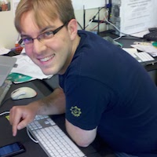

|  |
Daniel Halperin ("Dan")email: daniel@halper.in |
From October 2012 to April 2015, I worked at the University of Washington eScience Institute, most recently as the Director of Research for Scalable Data Analytics. I collaborated with the scientists and computer scientists across campus, most closely with Bill Howe, the Database Group in CSE and the Armbrust Lab in Oceanography. I designed and studied cloud services for scientific data analysis and visualization, including SQLShare, the Live SeaFlow Dashboard, and the Myria project for Big Data as a Service (for which I was the original technical lead). I also co-designed and co-led the Data Science Incubator and mentored several projects with scientists around UW.
Prior to eScience, I earned my Ph.D. studying wireless networks at the department of Computer Science and Engineering at the University of Washington, where I was advised by David Wetherall and Tom Anderson. My thesis work showed how to use low-level RF measurements to accurately, quickly, and efficiently configure wireless networks. As part of my thesis work, I developed an IEEE 802.11n measurement and experimentation platform, which I released to the community (see the CCR 2011 paper below).
I am a strong believer in reproducible science, and have made the code for many of my projects available on GitHub. This includes around 45 patches to the Linux Kernel.
You may be interested in my random useful things for academics.
My classmates and I were apparently into computing at a very early age.
Scalable and Efficient Flow-Based Community Detection for Large-Scale Graph Analysis [ link ]
Seung-Hee Bae, Daniel Halperin, Jevin D. West, Martin Rosvall, and Bill Howe.
ACM Trans. on Knowledge Discovery for Data (TKDD), vol. 11 no. 3, April 2017.
The Myria Big Data Management and Analytics System and Cloud Services. [ PDF SLIDES ]
Jingjing Wang, Tobin Baker, Magda Balazinska, Daniel Halperin, Brandon Hayes, Bill Howe, Dylan Hutchinson, Shrainik Jain, Ryan Maas, Parmita Mehta, Dominik Moritz, Brandon Myers, Jennifer Ortiz, Dan Suciu, Andrew Whittaker,
and Shengliang Xu.
CIDR 2017.
SQLShare: Results from a Multi-Year SQL-as-a-Service Experiment. [ link ]
Shrainik Jain, Dominik Moritz, Daniel Halperin, Bill Howe, and Ed Lazowska.
SIGMOD 2016. Most reproducible paper award
Uncovering regional variations in the balance of physical and biological controls on phytoplankton ecology with underway flow cytometry. [ link ]
Sophie Clayton, Daniel Halperin, Francois Ribalet, Jarred Swalwell, Bill Howe, E. Virginia Armbrust.
abstract #ME23A-04, American Geophysical Union, Ocean Sciences Meeting 2016.
Scalable clustering algorithms for continuous environmental flow cytometry. [ link ]
Jeremy Hyrkas, Sophie Clayton, Francois Ribalet, Daniel Halperin, E Virginia Armbrust, and Bill Howe.
In Bioinformatics, vol. 32 no. 3, October 2015.
Asynchronous and fault-tolerant recursive datalog evaluation in shared-nothing engines. [ link ]
Jingjing Wang, Magdalena Balazinska, and Daniel Halperin.
VLDB 2015.
Time-Varying Clusters in Large-Scale Flow Cytometry. [ PDF ]
Jeremy Hyrkas, Daniel Halperin, and Bill Howe.
IAAI 2015.
Perfopticon: Visual Query Analysis for Distributed Databases. [ link ]
Dominik Moritz, Daniel Halperin, Bill Howe, and Jeffrey Heer.
EuroVis 2015.
Myria: Scalable Analytics as a Service. [ link ]
Bill Howe, Daniel Halperin, and Andrew Whitaker.
AGU Fall Meeting Abstracts 2014.
SQL is Dead; Long-live SQL: Relational Database Technology in Science Contexts. [ link ]
Bill Howe and Daniel Halperin.
AGU Fall Meeting Abstracts 2014.
Demo of the Myria Big Data Management Service [ PDF ]
Daniel Halperin, Victor Teixeira de Almeida, Lee Lee Choo, Shumo Chu, Paraschos Koutris, Dominik
Moritz, Jennifer Ortiz, Vaspol Ruamviboonsuk, Jingjing Wang, Andrew Whitaker, Shengliang Xu, Magdalena
Balazinska, Bill Howe, and Dan Suciu.
Demo at SIGMOD 2014.
Big-Data Management Use-Case: A Cloud Service for Creating and Analyzing Galactic Merger Trees [ PDF
]
Sarah Loebman, Jennifer Ortiz, Lee Lee Choo, Laurel Orr, Lauren Anderson, Daniel Halperin,
Magdalena Balazinska, Thomas Quinn, and Fabio Governato.
SIGMOD Workshop on Data Analytics in the Cloud (DanaC) 2014.
Radish: Compiling Efficient Query Plans for Distributed Shared Memory [ PDF ]
Brandon Myers, Daniel Halperin, Jacob Nelson, Mark Oskin, Luis Ceze, and Bill Howe.
UW CSE Tech Report (#14-10-01) 2014.
Real-Time Collaborative Analysis with (Almost) Pure SQL: A Case Study in Biogeochemical Oceanography [ PDF
]
Daniel Halperin, Konstantin Weitz, Bill Howe, Francois Ribalet, Mak
A. Saito, and E. Virginia Armbrust.
SSDBM 2013.
Collaborative Science Workflows in SQL [ PDF ]
Bill Howe, Francois Ribalet, Daniel Halperin, Sagar Chitnis, and E. Virginia
Armbrust.
Computing in Science & Engineering: Special Issue on Science Data Management, vol. 15, no. 2, May/June 2013.
Scalable Flow-Based Community Detection for Large-Scale Network Analysis [ PDF ]
Seung-Hee Bae, Daniel Halperin, Jevin West, Martin Rosvall, and Bill
Howe.
ICDM Workshop on Data Mining in Networks (DaMNet) 2013.
Compiled Plans for In-Memory Path-Counting Queries [ PDF ]
Brandon Myers, Jeremy Hyrkas, Daniel Halperin, and Bill Howe.
VLDB Workshop on In-Memory Data Management (IMDM) 2013.
F10: A Fault-Tolerant Engineered Network [ PDF ]
Vincent Liu, Daniel Halperin, Arvind Krishnamurthy, and Thomas Anderson.
USENIX NSDI 2013. Best paper award
Advancing declarative query in the Long Tail of Science [ PDF ]
Bill Howe and Daniel Halperin.
Data Engineering Bulletin, vol. 35, no. 3, pp. 16—26, September 2012.
Simplifying the Configuration of 802.11 Wireless Networks with Effective SNR [ PDF | arXiv
]
Daniel Halperin.
Ph.D. Thesis, University of Washington, June 2012.
Augmenting data center networks with multi-gigabit wireless links [ PDF | CODE
| PPTX | PPTX→PDF
| VIDEO ]
Daniel Halperin, Srikanth Kandula, Jitendra Padhye, Paramvir Bahl, and David
Wetherall.
ACM SIGCOMM 2011.
Tool release: Gathering 802.11n traces with Channel State Information [ PDF | CODE ]
Daniel Halperin, Wenjun Hu, Anmol Sheth, and David Wetherall.
ACM SIGCOMM Computer Communication Review (CCR), vol. 41, no. 1, p. 43, January 2011.
Predictable 802.11 packet delivery from wireless channel measurements [ PDF | SLIDES | CODE ]
Daniel Halperin, Wenjun Hu, Anmol Sheth, and David Wetherall.
ACM SIGCOMM 2010.
Demystifying 802.11n power consumption [ PDF ]
Daniel Halperin, Ben Greenstein, Anmol Sheth, and David Wetherall.
USENIX HotPower 2010.
Investigation into the Doppler component of the IEEE 802.11n channel model [ PDF
]
Eldad Perahia, Anmol Sheth, Thomas Kenney, Robert Stacey, and Daniel Halperin.
IEEE GLOBECOM — Wireless Communications 2010.
802.11 with multiple antennas for dummies [ PDF ]
Daniel Halperin, Wenjun Hu, Anmol Sheth, and David Wetherall.
ACM SIGCOMM Computer Communication Review (CCR), vol. 40, no. 1, pp. 19–25, January 2010.
Taking the sting out of carrier sense: Interference cancellation for wireless LANs [ PDF | SLIDES ]
Daniel Halperin, Thomas Anderson, and David Wetherall.
ACM MobiCom 2008.
Pacemakers and implantable cardiac defibrillators:
Software radio attacks and zero-power defenses [ PDF
| SLIDES (by Ben Ransford) | website
]
Daniel Halperin*, Thomas S. Heydt-Benjamin*, Benjamin Ransford*, Shane
S. Clark, Benessa Defend,
Will Morgan, Kevin Fu, Tadayoshi Kohno, and William H. Maisel.
IEEE Symposium on Security and Privacy (Oakland) 2008. Outstanding Paper Award
*Co-student leaders listed alphabetically.
Security and privacy for implantable medical devices [ PDF | website ]
Daniel Halperin*, Thomas S. Heydt-Benjamin*, Kevin Fu, Tadayoshi
Kohno, and William H. Maisel.
IEEE Pervasive Computing, vol. 7, no. 1, pp. 30–39, Jan–Mar 2008.
*Co-student leaders listed alphabetically.
Interference cancellation: Better receivers for a new wireless MAC [ PDF
]
Daniel Halperin, Josephine Ammer, Thomas Anderson, and David Wetherall.
HotNets-VI 2007.
Hacking in the Name of Science [ link ]
Tadayoshi Kohno, Jon Callas, Alexei Czeskis, Daniel Halperin, Karl
Koscher, and Michael Piatek.
DEFCON 2008.
Most Reproducible Paper Award, ACM SIGMOD, 2016.
Best Paper Award, USENIX NSDI, 2013.
Intel Foundation PhD Fellowship Award, 2009–2010.
Most Outstanding Paper Award, IEEE Symposium on Security and Privacy (Oakland), 2008.
UW Clairmont L. Egtvedt Fellowship, 2006–2007.
Program Committee, IEEE eScience'14
Program Committee, SSDBM'13, '14
Web Chair and Social Media Chair, DySPAN '12
Program Committee, MobiCom '11 S3 Workshop
Program Committee, MobiSys '10 Ph.D. Forum
I taught CSE 484 / CSE M 584, Computer Security in Autumn 2011.
Ph.D., June 2012, University of Washington.
I was advised by David Wetherall and Thomas Anderson.
M.S., Spring 2008, University of Washington.
B.S., Joint Computer Science and Mathematics, 2006, Harvey Mudd College.
I worked with and learned from many great professors, but especially thank Ran Libeskind-Hadas and Zachary Dodds.
In my free time I captain the UW CSE Softball Team (The 2009 Infield Fly Conjecture and The 2010 No Missed Caches), go rock climbing, and try to keep my Spanish in shape. I really enjoy tutoring almost any subject I know anything about.